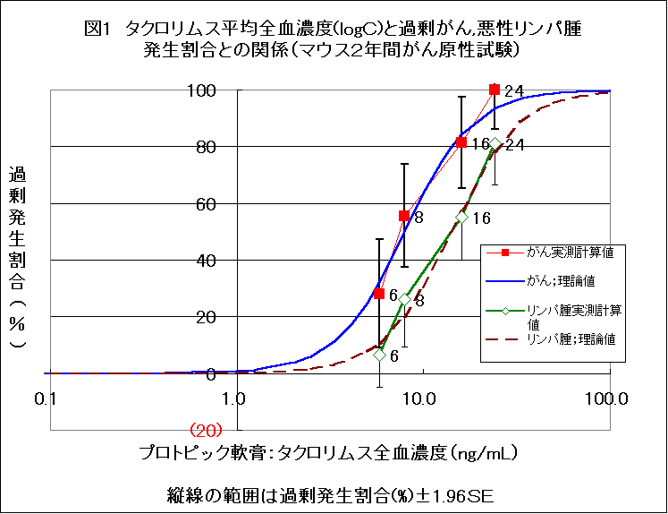

7月17日、藤沢薬品は、同日日本において「プロトピック軟膏0.03％小児用」の製造承認を取得したと発表した1)。プロトピック軟膏の主成分は、臓器移植の拒絶反応の抑制にも用いられ、悪性リンパ腫など癌も高頻度に発生させることが知られている免疫抑制剤"タクロリムス水和物"（「タクロリムス」と略）。1999年から16歳以上の成人アトピー性皮膚炎に対して0.1％プロトピック軟膏が承認されていた。今回承認されたのは、2歳から15歳の小児に適応が拡大された0.03％プロトピック軟膏である。
TIP誌では、プロトピック軟膏の危険性に関する論文2)を掲載し、NPOJIP（NPO法人医薬ビジランスセンター）と共同して、薬事・食品衛生審議会、薬事分科会各委員に対して、発がんの危険が高いので承認しないように求めていた3,4)。
6月26日の薬事分科会において、異例とも言える実質的審議が行われ、承認が確認されたものの厳しい条件がつけられた5,6)。最も重要な条件は、がん原性試験の0.03％より低濃度でのやり直しを命じたことであった6)。実質的に0.03％での発がんを認めたことになるからである。
その後も再三にわたり、NPOJIPから意見書7,8)を提出したが、7月17日、条件が整ったとして正式承認された9)。
公式にどのような条件が確認されたのか、未公表のために不明であるが、とりあえず、藤沢薬品が公表した文書と厚生労働省（厚労省）審査管理課の説明を総合すると、以下のような条件が確認されたもようである（なお、年齢の条件として「2歳未満に適応がない」点はメーカー申請どおりである）。
安倍審査管理課長によれば、薬事分科会は、「0.03％のがん原性試験だけで結論が出せない」と考え、「企業に対して0.03％以下の濃度でのがん原性試験を指示すべき」と結論し、厚労省では企業に対して指示した。このやり直し指示は、少なくとも「0.03％軟膏が発がんに関して安全量とは言えない」と認めたことを意味する。「0.03％軟膏によるがん増加」を公式に認めたわけではないが、実質的には認めたことになる。プロトピック軟膏の安全性の大前提が揺らいだわけで、その意義はたいへん大きい。
上記の条件が守られ、処方された患者に、きちんと「発がんの危険性」が伝わるかどうか、たいへん心配である。メーカーが上記条件を破るような「発がんの心配はない」旨記載した文書類を配布し、浸透させようとしているからである。
たとえば、7月17日発表された文書1)では、「添付文書に記載された塗布量を適正に使用していただければ、---安全性（発がん性）の問題は生じない」としている。これは、「患者向けの説明書に、発がんの危険があることを記載し、その情報を患者に伝える」という条件には反する行為である。
また、金沢大学（国立）医学部、竹原教授（皮膚科）が作成したとされる問答集10)では、「（0.1％で）がんの発生がヒトでも増えると考えられるのですか？」との質問に「そうではありません。」と答えている。この文書の日付は2003年7月で、藤沢薬品は「竹原先生から、この問題でお困りの先生がいらっしゃるなら同じものを使用して構わないと、---資料をご提供頂きました」「必要でしたら患者様への説明にご活用ください」との前書き付きで、7月はじめから関係者に配布して回っている11)。
また、これまでに藤沢薬品が配布しているパンフレット類で、同じ竹原氏著の「プロトピック軟膏Q&A」（発行藤沢薬品）12)では「プロトピック軟膏そのものでは発がん性は認められていません。」と断定している。高尾病院江部康二氏著の「プロトピックの上手なぬりかた」13)でも「プロトピック軟膏にも発ガンはありません」と断定している。このパンフレットは定価500円だが、藤沢薬品から医師に無料で届けられている。
処方は、「アトピー性皮膚炎の治療に精通した医師に限定」されることになるようである。しかし、「アトピー性皮膚炎の治療に精通した医師」がどのようなものかについて定義はない。そもそも、アトピー性皮膚炎の治療に精通しているはずの皮膚科医も、プロトピック軟膏による影響としての悪性リンパ腫や全身の「がん」の専門医ではないし、その問題の重大さを認識できるとは限らない。
投薬記録は、医療機関と、処方された患者の双方が保存しておくのが理想的なすがたである。記録の保存は、本来は医療を業として行っている医療機関が行い、必要に応じて患者がいつでもみることができるようにしておくべきである。そもそも、記録の保存が必要とされたのは、プロトピック軟膏に発がんの心配があり、疫学調査で関連を検討するためには、投薬されたという記録が必要だからだ。プロトピック軟膏でがんが発生するとすれば、プロトピック軟膏使用後十年以上も後になってからだから、記録の保存も、何10年にわたって必要である。
今回の承認条件では、プロトピック軟膏についても、5年を経過すれば、他の記録と同様に、医療機関側には保存の義務はなく、すべて患者の責任となるようである。これでは、がんの増加を疑う調査さえできないのではないか。
プロトピック軟膏が処方された患者には、「記録を大切に保管し、決して失わないようにしてください。」としかいいようがない。
医師には、危険なプロトピック軟膏を自分自身が処方しないことが求められる。一方、実際に小児用軟膏の販売が開始されたら、処方箋を受けた薬剤師は調剤せざるをえず、自分の意志で「プロトピック軟膏の調剤をしない」という選択はできない。したがって、よく勉強してその発がんの危険性について認識した薬剤師ほど、調剤する際に悩むにちがいない。
薬剤師の役割として最も大切なことは、プロトピック軟膏を手渡す前に、添付文書に記載される「発がんの危険性」に関する情報を患者にきちんと説明することであろう。発がんの危険の認識の少ない医師ほど、「発がんの危険性」に関する説明はおざなりのはずだからである。
患者が医師から発がんの危険について説明を受けていないとすれば、患者にとって、使用するかどうかの選択に必要な情報をまだ受けていないことになり、適切なインフォームド・コンセントではない。薬剤師には、患者にとって、適切なインフォームド・コンセントになるよう、適切な情報提供が求められる。
また、薬剤師にとってもう一つ大切なことは、記録の保存である。プロトピック軟膏使用者が、がんになったとき、肝腎の「記録がない」ということになってはならない。投薬記録の「長期保管の意味」についても、患者に十分説明をするとともに、調剤薬局でも病院の薬局でも、プロトピック軟膏処方患者の記録は永久保存を心がけていただきたい。
別に詳細に述べるが、ICHのガイダンス14）では、遺伝毒性のない物質は、ヒトで用いられる最高用量の血中濃度を、動物で発がんする最低用量における血中濃度の25分の1以下にすべきとされている。ところが、プロトピック軟膏ではこれが3〜4分の1にすぎない。明瞭なICH規準違反である。
0.1％プロトピック軟膏も危険であり、販売を中止すべきである。しかし、中止しないなら、少なくとも0.03％軟膏同様、0.1％プロトピック軟膏についても、発がんの危険性に関する情報提供、処方証明書の発行など記録保存が可能となるよう措置を講じるべきである。
「2歳で使用を開始した場合を想定してみてください。成人するまでに発がんする危険も否定はできません。途中で中止したとしても比較的若くして、がんにかかるかもしれません。もしそのことが現実のものとなった場合には（その可能性は高いのではないかと推察されます）、薬事・食品衛生審議会、薬事分科会委員の方々の責任は重大と考えます。」との警告を要望書や意見書で再三指摘しておいた。正式承認によって、薬事分科会委員、第一調査会委員、医薬品医療機器審査センター厚労省、藤沢薬品は重大責任を負うことになったといえよう。
アトピー児を生涯「がんと免疫異常のリスク」にさらしてはならない
販売されれば、関係者の重大な責任は、歴史が証明することになろう。しかし、市販されるまでにはまだ、いくつかの通過点がある。
である。
小児用に実施された臨床試験データなどは未公表である。厚労省は、プロトピック軟膏に関するすべてのデータを公表し、医薬品第一部会および、薬事分科会の全議事録を公開し、第三者の検討に供し、第三者による公正な評価を受けるべきである。NPOJIPとTIPでは、承認根拠情報が公表され次第、それらの情報をもとに、再度批判的に評価するつもりである。1人1人が監視を強め、プロトピック軟膏の危険性を認識し、広めていただきたい。（参考文献：次記事の文末）
TIP誌6月号2)にプロトピック軟膏の危険性に関する論文を掲載後、さらに様々な事実が判明した。薬事・食品衛生審議会、薬事分科会委員や分科会長宛てに、再三にわたって要望書3)や追加資料4)、意見書7,8)を提出してきた。それらで扱った内容を総合し紹介する。なお詳細は『薬のチェックは命のチェック』インターネット速報版No20〜26参照3-9)。
軟膏基剤対照群の癌発生割合(Pc)と、プロトピック軟膏群の癌発生割合(Pr)から、タクロリムスによる過剰がん発生割合(excess cancer risk：P）を
P＝（Pr-Pc）/（1-Pc）により、プロトピック軟膏の濃度別、雌雄別に計算し、タクロリムス総曝露量として平均全血濃度(C)をAUCから推定し、両者の関連をロジスティック曲線による近似を試みた。
P＝1／（1＋ｅ-5.5_（logC-0.90 ））により良好な近似が得られた8)。
なお、全血濃度と悪性リンパ腫過剰発生割合と間にも
P＝1／（1＋ｅ-5.5_（logC-1.15 ））で近似される関連を認めた。
しかも、タクロリムスの全血濃度測定方法として、0.025ng/mL、あるいは0.05ng/mLを検出限界とし、感度も精度もよい検査法が開発されているにもかかわらず、小児も含め大部分の臨床報告で、検出限界0.5ng/mLの方法で測定し、しかも全血濃度が0.5ng/mLの場合は「0」ng/mLと読み替えて平均全血濃度を算出していることが明かとなった8)。このため、平均血中濃度は、本当の値よりも低めになっていると考えなければならない8)。
がん原性試験では、2つの対照群が用いられ、毛刈のみ群でもがんの発生が高かったことが問題にされているが、ICHがん原性試験ガイダンス14)でも、比較の対照の基本はワセリン（軟膏基剤）群で、毛刈のみの群はあくまでも参考のみということが明記されている。実際、マウスの毛を体表面積の40％も刈ることはたいへん非生理的なことで、それだけでたいへんなストレスになる。軟膏基剤（ワセリン）だけでも塗っておく方が保湿にもなりストレスが少ないと考えられる。プロトピック中のタクロリムスの影響を調べるのであるから、タクロリムスが入っていない軟膏基剤と比較しなければならないのは当然である。
まず、過剰がん発生割合(P)を次式により求める。P=(Pr-Pc)/(1-Pc)
ただし、Pr：プロトピック軟膏（0.1％または0.03％）群における、がん発生割合
その結果を、表1に示す。
| 表１ 過剰がん発生割合の計算 | ||||
|---|---|---|---|---|
| がん発生割合（％） | ||||
| プロトピック | プロトピック | 軟膏 | 過剰がん | |
| 軟膏濃度 | 軟膏群 | 基剤群 | 発生割合 | |
| （％） | Pｒ×100 | Pc×100 | Ｐ×100 | |
| 雄 | 0.03 | 54 | 36 | 28.1 |
| 0.1 | 88 | 36 | 81.3 | |
| 雌 | 0.03 | 76 | 46 | 55.6 |
| 0.1 | 100 | 46 | 100.0 | |
| 過剰がん発生割合（P）＝（Pr-Pc）/（1-Pc） | ||||
表2に、0.03％群雄、0.03％群雌、0.1％群雄、0,1％群雌の順に過剰がん発生割合を示した。
それぞれ、28％、56％、81％、100％となった。
| 表２ タクロリム平均AUC、平均全血濃度、過剰がん発生割合(％) | ||||
|---|---|---|---|---|
| 過剰 | ||||
| タクロリムス | タクロリムス | がん発生割合 | ||
| タクロリムス | 平均AUC | 平均全血濃度 | (%) | |
| 濃度（％） | 雌雄別 | （ng・h/mL）* | （ng/mL）# | Ｐ×100 |
| 軟膏基剤群 | 0 | 0 | 0 | |
| 0.03％ | 雄 | 139 | 5.8 | 28.1 |
| 0.03％ | 雌 | 190 | 7.9 | 55.6 |
| 0.1％ | 雄 | 384 | 16.0 | 81.3 |
| 0.1％ | 雌 | 581 | 24.2 | 100 |
| *1w,6M,12MにおけるＡＵＣ値の幾何平均、 #平均全血濃度=AUC/24 | ||||
| 単純相関係数（r）＝0.967 （p<0.01） ；ｒ2=0.94 | ||||
ついで、プロトピック軟膏中のタクロリムスの総曝露量を最もよく反映していると考えられる、平均AUC値を0.03％群の雄と雌、0.1％群の雄と雌について、以下のようにして求めた。
できるだけ若い時期の曝露、血中濃度が比較的高い時期として、それぞれの群の、投与1週、投与6カ月、および投与12カ月の3点のAUCデータを抽出し、これらを幾何平均し、平均AUC値とした。
その結果を表2に、0.03％群雄、0.03％群雌、0.1％群雄、0,1％群雌の順に示した。それぞれ、139、190、384、581ng・h/mLであった。その結果を表2に、0.03％群雄、0.03％群雌、0.1％群雄、0,1％群雌の順に示した。それぞれ、139、190、384、581ng・h/mLであった。
マウスのタクロリムス全血中濃度消失半減期は、明瞭には示されていないが、投与1週間目のAUCより6カ月目のAUCが概ね高いことから16)、1日1回の塗布でも長期間塗布し続けることにより蓄積している可能性がある。したがって、マウスでは半減期は相当長いと推測される。また、AUC/Cmaxの値が、ほぼ14〜15倍であることも、血中濃度の変動があまり大きくないことを推測させる。
したがって、AUC値を24で除して平均全血濃度とみなすことは合理的と考える。表2に、マウス2年間がん原性試験における、各群雌雄別の平均全血濃度を0.03％群雄、0.03％群雌、0.1％群雄、0.1％群雌の順に示した。それぞれ、5.8、7.9、16.0、24.2ng/mLであった。
求めた4点の平均全血濃度を対数で表し、過剰がん発生割合（%）と、過剰がん発生割合(%)±1.96SEを縦線でグラフ上に示した（図1）。
ついで、(1)式を用いて、任意の全血濃度値(C)に対する過剰がん発生割合の理論値(P)を計算し、グラフ上に描いた（図1）。
P＝1／（1＋e−5.5_(logＣ−0.90 ）） (1)
過剰がん発生割合(%)の95％信頼区間（±1.96SEの範囲）の中に理論曲線は十分入っている。したがって、全血濃度と過剰がん発生割合（実測計算値）との関係は、logistic 曲線によく適合することが明瞭である。
なお、悪性リンパ腫過剰発生割合についても、過剰がん発生割合と同様の方法で求め、全血濃度との関連を検討したところ、P＝1／（1＋ｅ-5.5_（logC-1.15 ））で近似される関連を認めた（図1）。
ヒトでの発癌許容量は、ICHのガイダンス「医薬品のがん原性試験のための用量設定」14-b)等で明瞭に述べられている14)。
「医薬品のがん原性試験のための用量選択のガイダンスについて」14-b)の第4項「高用量選択における薬物動態学的指標」には、以下のように記載されている。
非遺伝毒性医薬品がヒトとげっ歯類でよく似た代謝様式を有し、かつげっ歯類での臓器毒性が低い場合（げっ歯類では高用量まで耐薬性がある）には、ヒトでの（最大推定一日量における）血中濃度時間曲線下面積(AUC)の高倍数で表される全身曝露量が、がん原性試験における用量設定に適した指標と考えられる。がん原性が適切であることを十分に保証するためには、動物での全身曝露レベルが、ヒトでの曝露に比べ、十分に高くなければならない。（中略） AUCは化合物の血漿中濃度とin vivoでの滞留時間が考慮されているので、最も包括的な薬物動態学的な指標と考えられる。（中略）現在のところ、MTDで実施されたがん原性試験のデータベースの解析によれば、がん原性試験の高用量選択には、げっ歯類では親化合物ないしは代謝物のヒトでの血漿AUCの25倍とすることが、実際的であると考えられる。
また、同第5項「高用量選択のための動物とヒトでのAUCの比較に関する基準」14-b)では以下のような記載がある。
さらに、「医薬品のがん原性試験のための用量選択補遺」14-c)には、以下のように記載されている。
人曝露量の25倍以上の用量でのみ、げっ歯類でがん原性を示した場合は、その発がんは人に対しても同様なリスクを示唆するものでないことが既に同意されている。げっ歯類とヒトとの全身曝露量の比較は、mg/kgよりmg/m2に基づいた用量により実施した方がより適切であることが示されている(SIC文書「医薬品のがん原性試験のための用量設定のガイダンス」の注4参照)。したがって、ヒトの用量はがん原性試験の高用量より少なくともmg/m2換算で25倍低くすべきである。
上記ICHガイダンス14)を適用すると、マウスがん原性試験で発癌のあった最低用量のタクロリムス全血濃度は、雌7.9ng/mL、雄5.8ng/mLであるから、ヒト最高用量におけるタクロリムス全血濃度は、その25分の1の0.32〜0.24ng/mLでなければならない。
プロトピック軟膏を1年間使用した日本での臨床試験15)において、3日目のデータを除き、1週目以降の平均使用量を計算すると2.6g/日であった（1週目以降の全期間の幾何平均値で求めた）。また、同様に、平均全血濃度を求めると、0.55ng/mLであった。この両者の値をもとに、最大使用量（1日10g）における平均血中濃度を推定すると、2.07ng/mLとなった。そこで、ヒト最高用量の全血濃度は約2ng/mLと推測できる。
この濃度（2ng/mL）は、マウス最低発がん全血濃度（6〜8ng/mL）の3〜4分の1に過ぎない。マウス最低発がん全血濃度（6〜8ng/mL）の25分の1の濃度（0.24〜0.32ng/mL）は、ヒト常用量の平均血中濃度（0.55ng/mL）よりも、さらに低いのである。
したがって、現在使用されている0.1％プロトピック軟膏は、明らかにICHのガイダンスに大きく外れた発がんの危険がたいへん大きな濃度で使用されていることを肝に銘じておかなければならない。
マウス最低発がん全血濃度の25分の1に相当する濃度0.2ng/mLにおける過剰がん発生割合を、上記のlogistic curveから推定すると、0.022％（約5000分の1）である。
非遺伝毒性物質ががんを発現する危険が一応許容しうる臨床用量としての、最低発がん全血濃度の25分の1（という濃度の違い）は、これまでに経験されたがん原性試験の結果と、ヒトにおけるがん発生の事実から求められたものである14-b)が、上記のように、理論面からも裏付けることができよう。
タクロリムスの全血濃度の検出限界は、1991年の論文17)の方法（酵素免疫学的測定法：EIA）を用いた第Ą相試験18)で0.05ng/mL、1997年の論文のHPLC-MSMS(high-performance liquid chromatography method with repeated mass spectrometry)法で、0.025ng/mLとされ19,20)、0.5ng/mLよりもはるかに低濃度まで測定可能である。
藤沢薬品のアメリカ法人Fujisawa Healthcare Inc. がFDAに提出したデータ19)によれば、小児の0.03％群の25人中、最高血中濃度が0.5ng/mL以上であったのは3人であり、22人は0.5ng/mL未満であった。これら0.5未満のデータ(全データの88%)をすべて「zero」として、平均値が求められ、その結果がその次のページに、全血濃度平均値として掲載されている。
たとえば、2〜6歳の場合、1週目では21人で測定され、その平均全血濃度は0.08ng/mLだが、大多数を占める0.5ng/mL未満の値を「0」として平均値を求めているため、実際の平均濃度よりもかなり過小評価になっているはずである。
通常、区間値しか求められていない場合の区間代表値は、その区間の中間値をとるべきであるため、0.25ng/mLを区間代表値とすれば、平均全血濃度は0.33ng/mLとなる。実際には平均値は中間値よりも低いと思われるので、その値を0.15ng/mLにとった場合は0.24ng/mLとなり、いずれにしても、がん発生が許容しうる限界濃度0.2ng/mLを超える値となる。プロトピック軟膏使用者の2分の1は、そのような危険な濃度にあるといえる。最高用量の患者の血中濃度は、許容限界をはるかに超える。
0.5ng/mL未満を「zero」とみなして平均値を求めたことは、0.025〜0.05ng/mLまで測定できる方法があるにもかかわらずそれを使用しなかったことと合わせて考えると、そこには敢えて「不正」を行う「意図」を感じないわけにはいけない。
なお、Fujisawa Healthcare Inc. がプロトピック軟膏の過大広告についてFDAの警告を受けていること21)も付け加えておく。
上記のように、著しく過小評価になる操作をしても、2〜6歳の0.03％群では、18％（註a）の小児が、1週目で0.48ng/mL以上であり、12週目でも0.25ng/mL以上の全血濃度になると計算できる。0.48ng/mLなら、確実発がん最低濃度の25分の1（0.24ng/mL）の2倍の濃度である。
註a：平均値よりも高い方の片側1SDより高い値になる割合が約18％である
ヨーロッパ・タクロリムス軟膏研究グループの報告20)では、75％が1ng/mL未満であったと報告されている。つまり、25％が1ng/mL以上であった。1ng/mLはマウスに確実に発がんした濃度の6〜8分の1でしかない。
メーカー自身、マウス0.03％群の血中濃度(AUC)は、0.1％軟膏臨床使用最大用量（MRHD）におけるAUCの10倍に過ぎないことを、アメリカで承認された際の添付文書に記載している22)。
先に述べた理論曲線をヒトにも当てはめてみると、1ng/mLという濃度では、本来がんにならない人のうち0.7％ががんに罹患することになる。10万人あたりなら700人という大きな数字で、自然発生するヒトのがん罹患率（10万人あたり100〜160人/年）と比較すれば、ヒトの自然発がんの4〜7年分という大きな値である。
免疫抑制剤としてタクロリムス使用開始時の用量（0.16mg/kg_2/日）におけるAUC0-12は平均274 ng・h/mLである23)。維持量は0.06mg/kg_2/日であるから、維持量ではAUC0-12は102.8ng・h/mLと計算でき、両者の幾何平均は168ng・h/mLとなる。このAUC0-12における平均全血濃度は14ng/mLであり、マウスがん原性試験における、0.03%軟膏群雌と0.1％群雌の全血濃度の幾何平均に相当する。その濃度における過剰がん発生割合の理論値は79.5％であった。別に計算した過剰悪性リンパ腫発生割合の理論値は49.5％であった。
TIP誌6月号2)では、免疫抑制剤として使用した場合のタクロリムス水和物（プログラフ）による悪性リンパ腫発生率は成人で数％、小児では10％にのぼることが報告されているとしたが、さらに文献検索したところ、いくつかの新たな情報が発見された。
たとえば、
免疫抑制による発がん促進であっても、臨床的にはがん増加させることにかわりない。免疫機能が未発達の小児には、発がんリスクは特に高く出ることが憂慮される。この点に関して、上記文献35）は重要である。
小児に（特に2歳ころ）1年間使用し、その子がEBウイルス感染者なら（多くの子が不顕性感染する）、たとえ一時的な使用でも、成人してがんを早期に発症する可能性を考えなければならなくなる。
また、免疫抑制剤で誘発される癌は悪性リンパ腫に限らない。悪性リンパ腫と同程度の皮膚がんが報告され、がん全体として、悪性リンパ腫の約2〜3倍のがんがヒト36-38）でも、また動物実験（がん原性試験）でも同様に報告されている。
さらにがん以外の害も多彩である。がん原性試験でみられた、心筋線維症に相当する心筋症が、臓器移植に使用された場合、短期（6カ月未満）にも、長期（6カ月以上）にもみられ、糖尿病（インスリンを分泌しないもの）や、神経障害、腎障害も生じている39)。この点も重要と考える。
上記のような大人の追跡データと、小児と大人の違いを考慮にいれると、小児には、4〜5年で15〜20％発生し、7年以経過後からまた増加して10〜20年経てば30〜50％になる可能性もある。このことを、1カ月間曝露しただけで、あと曝露しなくても一生の間のがんが増える35)という情報と、総合して考察すると、小児にプロトピック軟膏を短期間でも塗ると、その後、一生にわたって、相当な発がんの危険をかかえることになるといえよう。
ヒトの臓器移植におけるタクロリムスの全血濃度は、マウスで確実な発がん最低用量0.03％群と0.1％群の中間的全血濃度であった。
免疫抑制剤として使用した場合、人でもマウスでも悪性リンパ腫の約2〜3倍の悪性腫瘍が発生している。また、ヒトでのがん発生の追跡経過年数はせいぜい10年あまりに過ぎないので、10年を超えて追跡すれば、全部位の発がん割合はさらに高くなることが、ほぼ確実に予測できる。したがって、マウスとヒトは、同じ全血濃度なら発がんの危険性は同程度となる可能性が十分にある。
以上から、免疫抑制剤のなかでも、とくに強力な免疫抑制作用を有するタクロリムスにより、生涯の発がんの危険はかなりのものになると予測される。
「医薬品のがん原性試験のための用量選択のガイダンスについて」14-b)の第4項「高用量選択における薬物動態学的指標」には、以下のように記載されている。
との本文記載の引用文献14-b)にアクセスして、ここに記載されている「第４項」を探しても、なかなか見いだすのが困難です。第３項から第５項に飛んでいるように見えますが、第３項と第５項の始まりの中ごろに、
---、臨床病理学的パラメーターに有意の変動がみられること，などが挙げられる。医薬品のがん原性試験のための用量選択のガイダンスについて694 高用量選択における薬物動態学的指標
とあり、
その「4 高用量選択における薬物動態学的指標」が第４項のタイトルです。わかりにくい理由は：